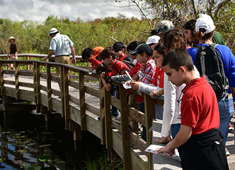
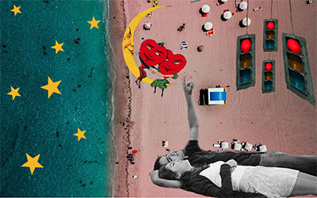
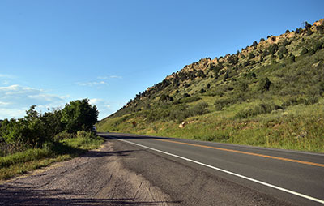
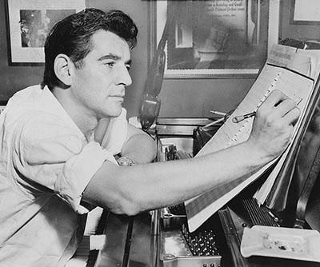
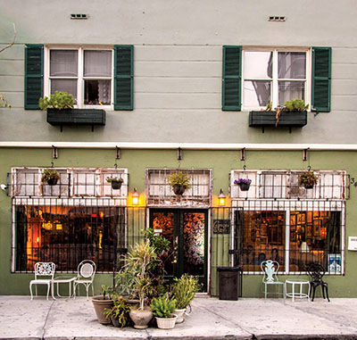

Everglades Works on Diversity Dilemma
Our National Parks, 2018
There is a slight buzz hanging in the dirt baked, humid South Florida air. A group of students, uniform in Miami Shores Elementary t-shirts and the remnants of their lunch crusted on their lips, blend into the nature. It is not a common sight. Across the United States, the National Park Service has struggled to attract diverse, young visitors, especially as demographics shift, an issue that has influenced the understanding of the parks and preservation efforts. Read more here.

I Do, But Not Yet, If Ever
Distraction Magazine, 2019
Not everybody wants a Valentine, not yet anyway. Marriage and the desire to get married continues to be influenced by changing socioeconomic and cultural factors. Increasingly, young, educated adults are pushing back marriage dates and questioning what marriage even is. Read more here.

Why a Local DACA Recipient Will Bike More Than 120 Miles This Weekend
5280 Magazine, 2019
Javier Pineda will ride from Copper Mountain to Aspen this weekend to bring attention to the need for comprehensive immigration reform and highlight the impact that immigrants have in the community. Read more here.

Photo By Al Ravenna, World Telegram; Courtesy of the Library of Congress.
The Moment That Defines Famed American Composer Leonard Bernstein
Smithsonian Magazine, 2018
The 25-year-old Leonard Bernstein had spent the morning scrambling to prepare for what he believed should not have happened for years. It was November 14, 1943, and Bernstein had gotten the call informing him he was to step in that night for the famous conductor Bruno Walter at Carnegie Hall, who was ailing. Bernstein rushed to visit the famous conductor. Read more here.
Photo by Saksham Gangwar, Unsplash
A Contemporary American-Bollywood Love Story Comes to Aurora
5280 Magazine, 2019
It might seem unlikely that a man raised in the mountains of the West and a woman from India would ever cross paths. Yet, in Mountains Made for Us - the premiere production from Roshni, an Aurora-based nonprofit arts organization - the marrying of these two divergent cultures highlights an important lesson about appreciating tradition but still following your heart. Read more here.
Photo by Sidney Sherman, Distraction Magazine
The Invisible Trade
Distraction Magazine, 2018
He kisses her softly on her forehead, his hands pulling at her hips. Her arm, decorated with a fresh tattoo and a new Cartier bracelet, reluctantly hands over a wad of money. Thirty dollars, it isn’t enough. Her cheek goes numb – another blow to match the patch of bruises on her leg. She stumbles back, grabbing her face. Read more here.

Photo by Sidney Sherman, Distraction Magazine
Lagniappe: Miami's Added Bonus
Distraction Magazine, 2018
Tucked in Midtown Miami, Lagniappe House – a New Orleans-style bar, proves its namesake: a bonus. In an eclectic hideway, glass of wine in hand, this spot offers a unique environment to the bustling club scene of Miami. Read more here. (1.96 MB)